變更流程
多張保單地址/電話/E-mail變更
步驟 1：
由【富邦人壽官網】，點選『保戶會 員專區』登入。
由【手機e方便】，點選『保戶會員專區』登入。
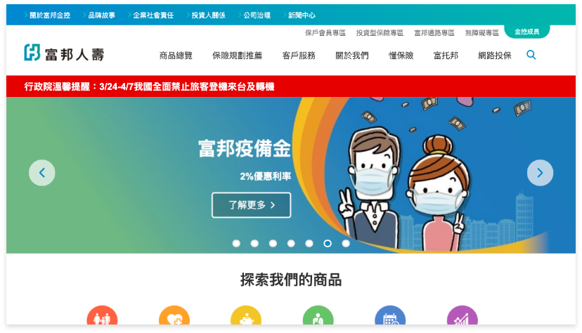
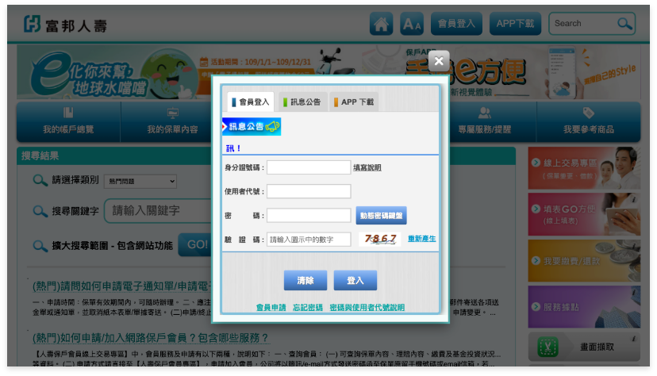
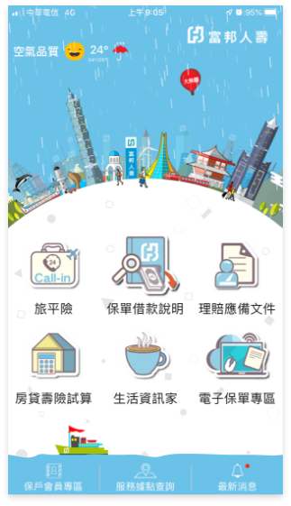
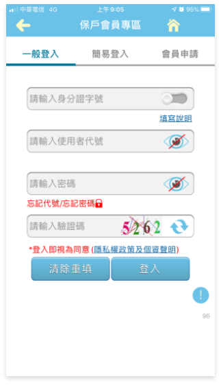
步驟 2：
點選『線上交易』
★保戶需先申請成為交易會員方可於 網路 辦理變更。。
步驟 3：
點選後進入『多張保單地址/電話/E-mail變更』作業。
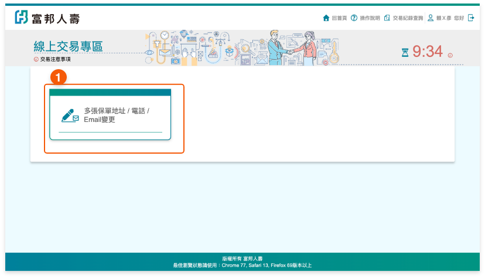
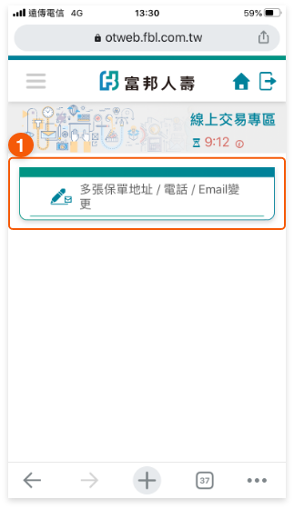
步驟 4：
確認顯示的行動電話及電子信箱是否為最新資料，若需修改請點選修改。
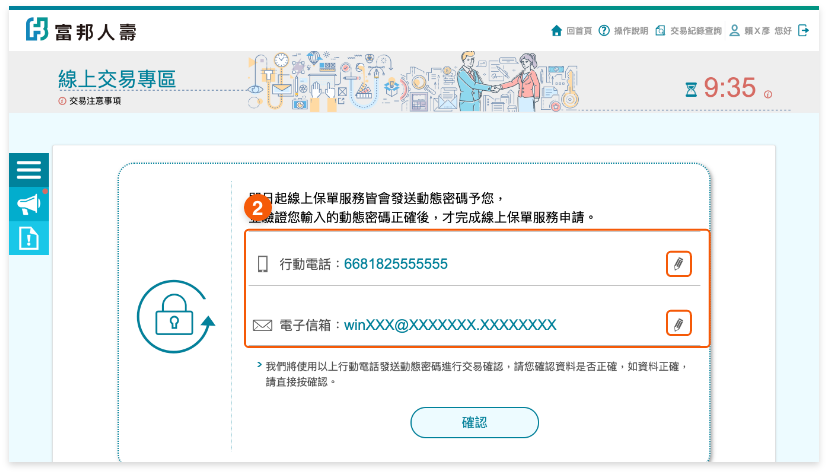
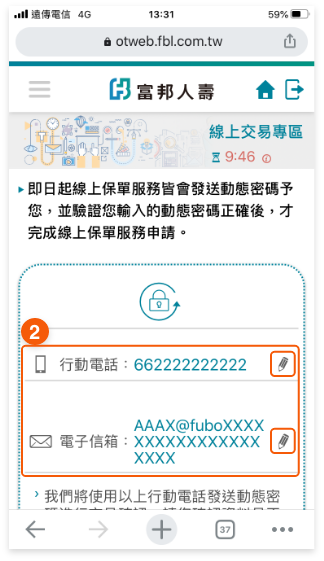
步驟 5：
請點選即可輸入欲變更之內容
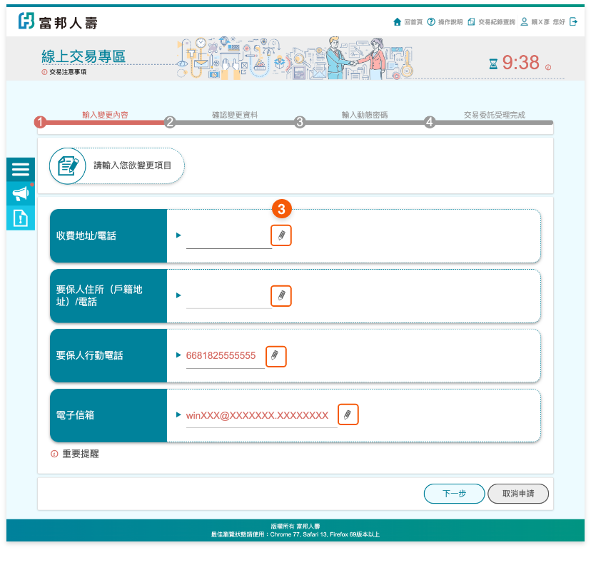
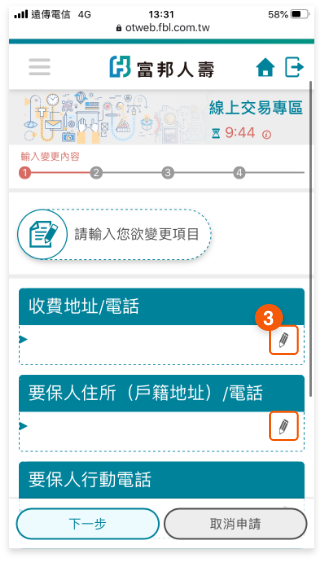
步驟 6：
1確認變更內容
2點選，即可刪除此項目
3點選，可回此變更項目輸入修改變更內容
1請確認變更內容是否正確
2若欲放棄申請，可點選
3若欲修改該項變更輸入內容，可點選
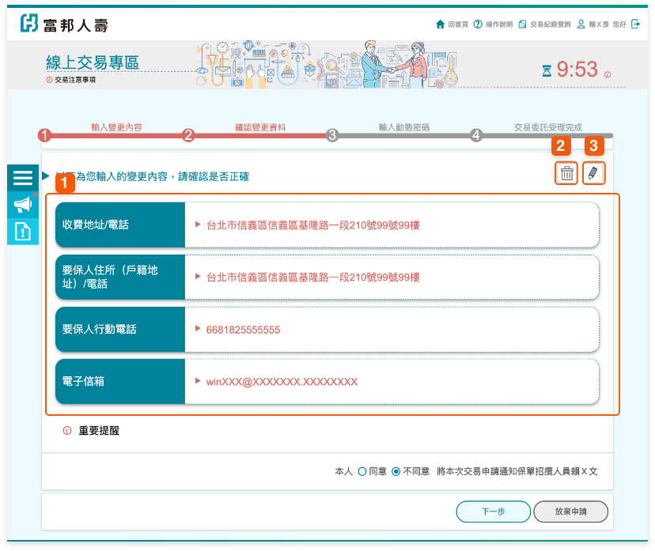
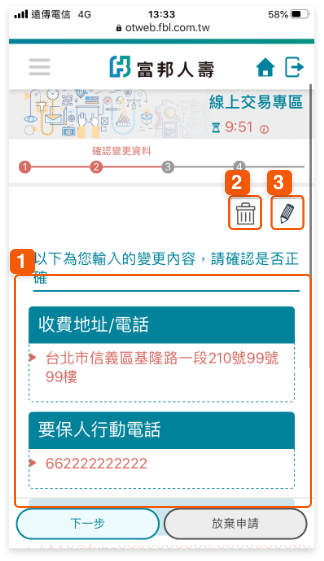
步驟 7：
請審閱重要提醒，確認無誤後請勾選□我已了解並同意後，點選確認進入下一步。
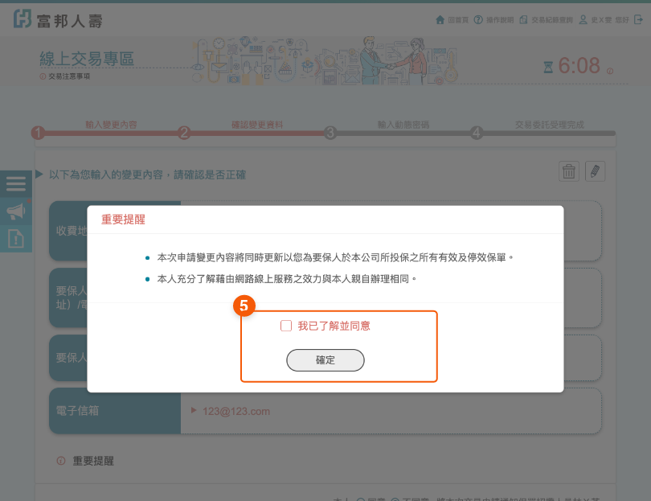
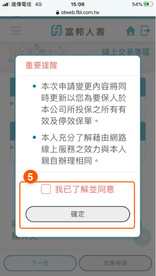
步驟 8：
請確認本次辦理變更資料，是否傳送至其他保險公司申辦相同變更項目。
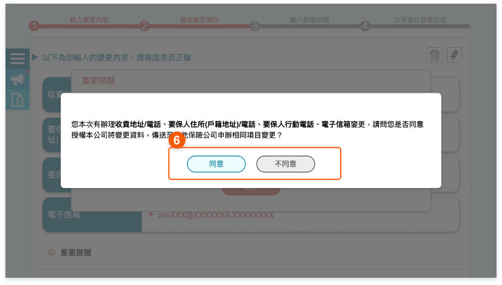
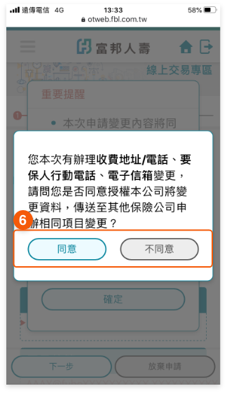
步驟 9：
如同意傳送至其他保險公司，請選擇欲傳送之保險公司(可複選)。
★僅提供有加入試辦之保險公司，請勾選有該公司保單之保險公司。
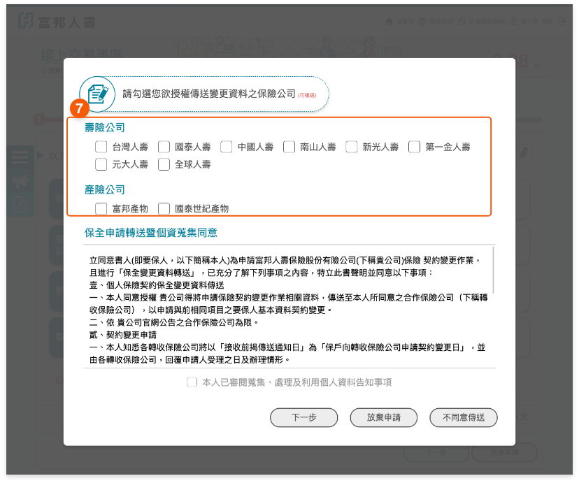
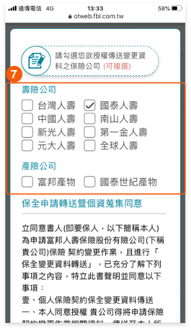
步驟 10：
請審閱保全申請轉送暨個人資料告知事項，審閱完成後，請點選□本人已審閱蒐集、處理及利用個人資料告知事項，如取消轉送，請點選『不同意傳送』，可回至確認是否同意轉送頁重新選擇。
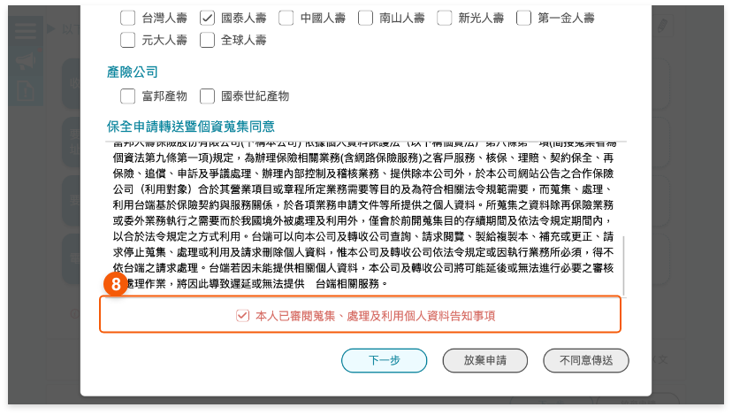
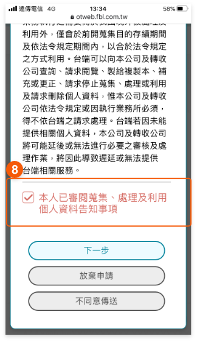
步驟 11：
輸入動態密碼，未收到動態密碼，可點選重新發送動態密碼。
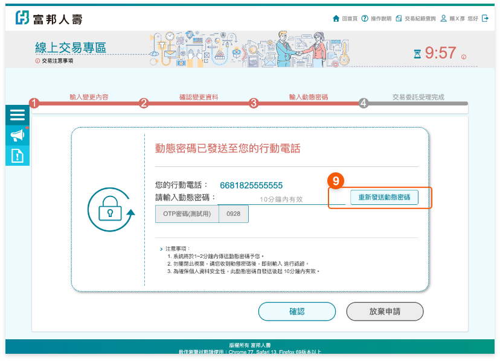
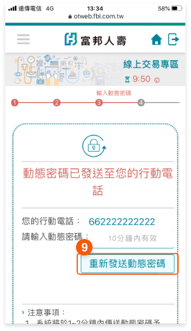
步驟 12：
委託受理完成。可點選『列印內容』，產出加密之PDF檔，密碼為要保人身分證字號，第一個英文字母大寫。
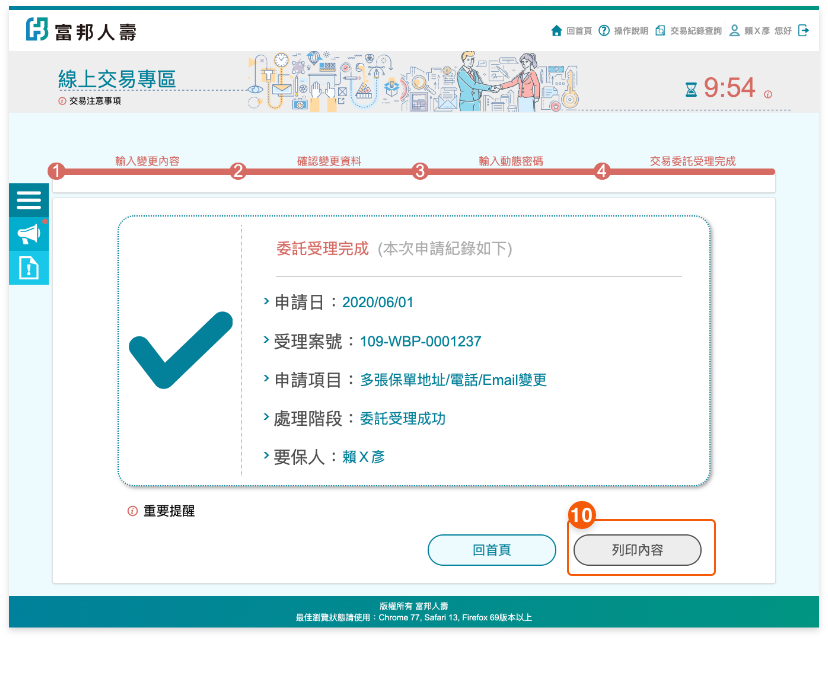
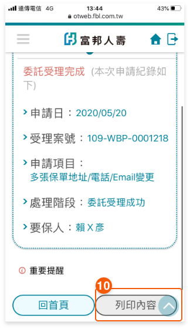